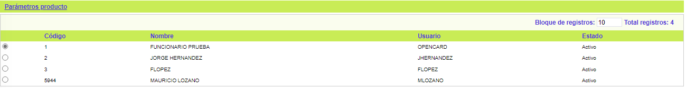
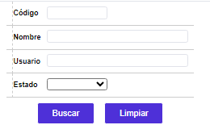
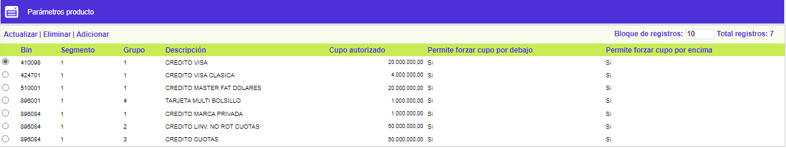
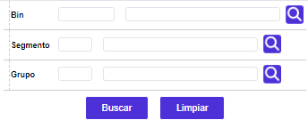
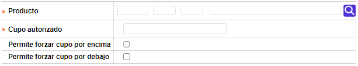

Parámetros de solicitudes - Funcionarios
Funcionarios: Formulario que permite determinar a qué productos de la entidad puede cada Funcionario asignar manualmente cupos o modificar el asignado automáticamente por el sistema.
El formulario contiene la opción Parámetros producto. Adicionalmente, cuenta con un filtro de búsqueda y un botón en la parte superior para volver al formulario principal.

Filtro: Se pueden realizar consultas a través de los siguientes campos:

Código |
Campo numérico de cinco posiciones, en el cual se registra el código que identifica a cada funcionario. |
Nombre |
En este campo alfanumérico de 30 posiciones, se registra el nombre del funcionario a buscar. |
Usuario |
Campo en el que se puede digitar el usuario asignado al funcionario a ser buscado. |
Estado |
Campo que posee lista de valores adjunta en la que se debe seleccionar si se deja el campo Nulo, si el funcionario está Activo, Inactivo, Retirado o Suspendido. |
Parámetros producto: Formulario que despliega todos los Productos para los cuales el Funcionario tiene atribuciones.
El formulario contiene las opciones Actualizar, Eliminar, y Adicionar. Adicionalmente, cuenta con un filtro de búsqueda y un botón en la parte superior para volver al formulario anterior.

Filtro: Se pueden realizar consultas a través de los siguientes campos:

Bin |
Campo numérico de ocho dígitos que permite realizar búsqueda por Bin. |
Producto |
Campo numérico de tres dígitos que permite realizar búsqueda por Producto. |
Grupo |
Campo numérico de ocho dígitos que permite realizar búsqueda por Grupo de afinidad. |
Adicionar: Si el usuario invoca la opción Adicionar se despliega un formulario con los siguientes campos:

Producto |
Campo obligatorio que contiene una lista de valores que muestra los datos parametrizados en la Definición de productos. |
Cupo autorizado |
Campo numérico obligatorio de máximo doce (12) enteros y dos (2) decimales, que determina el màximo de cupo asignado que el funcionario puede ingresar o modificar en las solicitudes. |
Permite forzar cupo por encima |
Campo de marca que determina si el funcionario está autorizado para forzar cupos con esta condición. |
Permite forzar cupo por debajo |
Campo de marca que determina si el funcionario está autorizado para forzar cupos con esta condición. |
Actualizar: Si el usuario invoca la opción Actualizar se despliega un nuevo formulario en el cual los únicos campos modificables son: Cupo autorizado, Permite forzar cupo por encima, y Permite forzar cupo por debajo.

Formulario principal |Filtros | Calificación| Negación | Variables cupo| Globo de localización